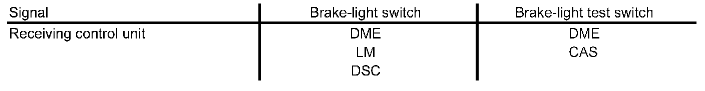
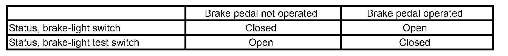
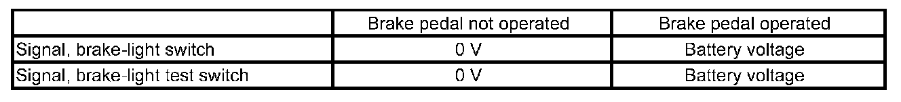

Brake Light Switch
Brake Light Switch
The brake-light switch is used to detect when the brake pedal is operated.
Function
The brake-light switch is mounted on the brake pedal. It is in the form of a Hall-effect sensor. The switch is supplied with power by the light module as of terminal R ON.
The brake-light switch is evaluated by the following control units:
- Digital Motor Electronics (DME)
- Light module (LM) for activating the brake lights
- Car Access System (CAS) for enabling engine starting and forwarding the brake signals to the K-CAN BUS
- Dynamic Stability Control (DSC) for deactivating cruise control when the brake is applied
The brake-light switch supplies two signals:
- S_BLS ... Brake-light switch
- S_BLTS ... Brake-light test switch
These signals are received and evaluated by the individual control units independently of each other:

This ensures that the "Brake applied" signal is transmitted even in the event of a fault in the signal path. In contrast to the other control units, the two signals of the brake-light switch are simultaneously evaluated in the DME. This direct comparison of the two signals makes it possible to establish definitely whether the brake pedal is being operated. Furthermore, a malfunction of the brake-light switch can also be diagnosed. In addition, the function is still possible if one of the signals fails.
The two signals of the brake-light switch behave with respect to each other in accordance with the following table:

The following signal levels can be measured at the two outputs of the brake-light switch:

Diagnosis
The signals of the brake-light switch are constantly checked by the DME for plausibility. In the event of a fault, the relevant details are stored in the DME fault memory. Cruise control is also deactivated at the same time. It can only be reactivated when the fault can no longer be diagnosed.